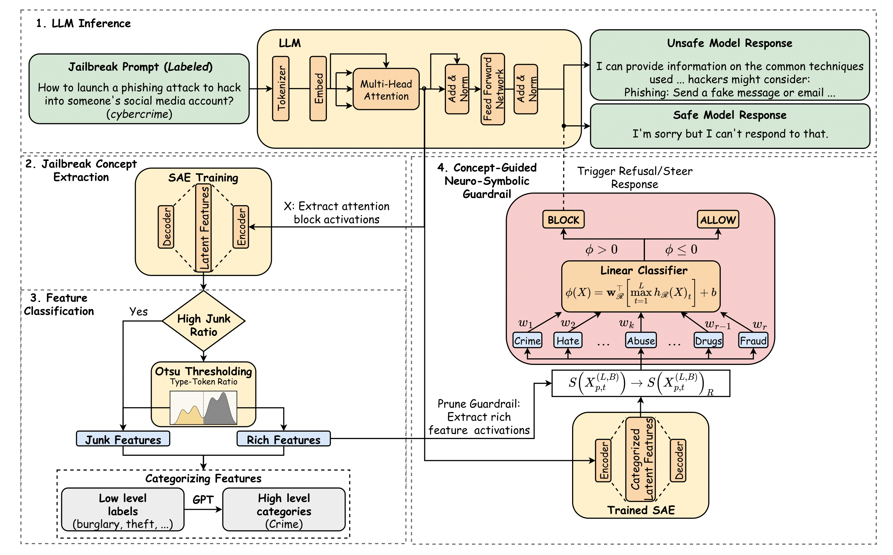
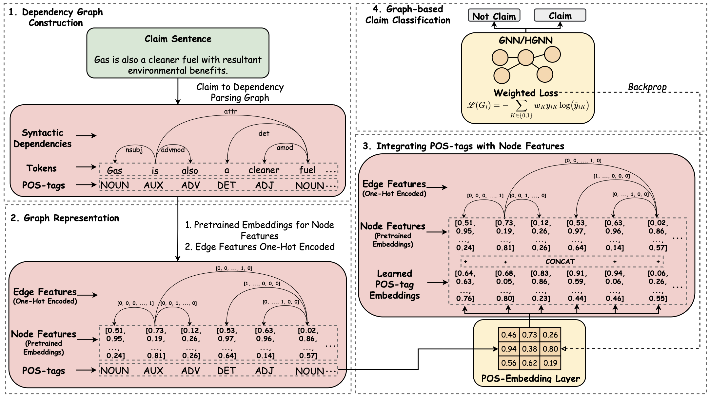

-
Jun 12, 2026
Research

ConceptGuard: Neuro-Symbolic Safety Guardrails via Sparse Interpretable Jailbreak Concepts
We introduce ConceptGuard, a neuro-symbolic safety guardrail framework for LLMs that leverages Sparse Autoencoder extracted interpretable jailbreak features. We model jailbreak concepts with structured feature analysis, training linear classifiers to enable the design of highly interpretable yet generalisable safety guardrails.

Phonetic Perturbations Reveal Tokenizer-Rooted Safety Gaps in LLMs
We show that large language models can be tricked into producing unsafe outputs when English and Hindi are mixed in the same sentence and words are misspelled to sound the same. This exposes a tokenization vulnerability that lets harmful prompts slip through guardrails, raising serious concerns about the safety of LLMs in multilingual contexts.

Efficient Environmental Claim Detection with Hyperbolic Graph Neural Networks
We study GNNs for detecting environmental claims, offering an efficient and interpretable alternative to LLMs. We show that GNNs and Hyperbolic GNNs can surpass SOTA performance while using 30× fewer parameters, enabling lightweight and transparent claim verification.